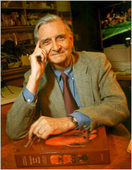

We all want to do something else
Written on February 17, 2009 by mimecine
I keep this in my Inbox and read it over and over again and then I think that although I love what I do… even if you love what you do… you have to be inspired to do this for work. Please follow the link if you are curious.

October 23, 2008
From the Desk of David Pogue
An Interview With E.O. Wilson, the Father of the Encyclopedia of Life
By DAVID POGUE
This past Sunday, “CBS News Sunday Morning” aired my report on the Encyclopedia of Life project. (I’m campaigning hard for them to post the segment online.)
As usual, putting this story together involved conducting a number of interviews, which were fascinating–but I had time to use only a few sentences of each one in the finished story. It always seems such a shame to let the rest of these interviews go to waste. ‘
E.O. Wilson
So today, I offer a much longer version of my interview with E.O. Wilson (friends call him Ed), the two-time Pulitzer Prize winner, naturalist and Harvard research professor who’s the father of the Encyclopedia of Life.
DAVID POGUE: So how did this project come about?
DR. E.O. WILSON: I’ve been in systematics and the mapping of biological diversity all my life. And a little more than ten years ago, I thought the time had come to undertake a complete mapping of the world’s fauna and flora.
Because remarkably–and this is little known even in the scientific community–we’ve only begun to explore this planet. It was 250 years ago this year that Karl Linneus, the great naturalist in Sweden, began what became the official form of biological classification: two names, like “homo sapiens” for us, and ranging the species in hierarchies according to how much they resemble one another. 250 years ago.
And in that period of time, we have found and given names to perhaps one-tenth of what’s on the surface of the earth. We have now found 1.8 million species. But the actual number is almost certainly in excess of 10 million, and could be as high as a hundred million, when you throw in bacteria.
Let me give you an example. Fungi. The world depends on fungi, because they are major players in the cycling of materials and energy around the world. They’re necessary for the health of other organisms. (We should get rid of the idea that fungi are what gives you athlete’s foot…feet.) Some 60,000 species are known, and it’s been estimated by experts that more than 1.5 million exist. So we’ve just begun to explore it. And that’s true, group after group. We’re just beginning.
For a period of time, I was a voice in the wilderness, with a few others, wandering around and trying to raise a lot of money, unsuccessfully, saying, “You know, we need to bulk up the exploration of the planet, the living part.” And finally, in 2003, I wrote a paper called “The Encyclopedia of Life.” And I said, “What we need is to get out there and search this little-known planet, and then put all the information that we get on species already known into a single great database, an electronic encyclopedia, with a page that’s indefinitely extensible for each species in turn, and that would be available to anybody, any time, anywhere, single access, on command, free.”
We were about to enter the age of Google. We were about to enter an age where, technically, we could have everything available to everybody all the time.
So I published that article and began to promote it. And some others picked up on it. The key, however, was the warm reception made to it by the MacArthur Foundation. [The MacArthur and Sloan foundations eventually contributed $12 million to launch the project. Later, Dr. Wilson also won the TED Prize, which brings with it $100,000 and, more importantly, a lot of exposure and contacts to help three visionaries each year make their wishes come true.]
DP: And what do you say to people who think, “Oh. Oh, how interesting. A database for scientists.” I mean, is there a greater purpose to a Web site like this?
EOW: The public will have this unlimited encyclopedia, where it can browse [at eol.org]. Where individual students can do their own research projects. Where you can make your own field guide wherever you’re going. It will tell you what the butterflies are of Oregon, or maybe you’re hoping to make a trip to Costa Rica and the whole family would like to see turtles. In time, you’ll be able to do this with a few keystrokes.
DP: So I understand that the Encyclopedia will operate Wikipedia-style, with contributions from the public, which are then approved by experts?
EOW: The world is full of amateurs: gifted amateurs, devoted amateurs. You can pick almost any group that has any kind of intrinsic interest in it, from dragonflies to pill bugs to orb-weaving spiders. Anybody can pick up information in interesting places, find new species or rediscover what was thought to be a vanished species, or some new biological fact about a species already known, and can provide that right into The Encyclopedia of Life.
DP: Haven’t there been previous attempts to catalogue every species in the world?
EOW: Yes, there have been several. And if you have access to one of the great libraries and a LOT of time, you can, with great effort, pull out everything known about every species. But it would take an army actually to get all the information on all species, all 1.8 million species and on beyond, around the world.
For example, 30 feet from where we sit is the largest ant collection in the world. One million specimens, 6,000 species, and it’s a wonderful resource. [DP notes: This collection represents Wilson’s own life’s work.]
But any scientist who wants to utilize this collection–and that’s most of them who are doing research on ants–have to come here [to my department at Harvard]. But when The Encyclopedia of Life receives all the information that we have, like the superb photographs and basic data on the species, just a few keystrokes away, it’ll be possible to do high-level, cutting-edge, real-time research, wherever you are.
Simultaneously, to speed things along even more, the Biodiversity Heritage Library Initiative has set out to scan and make available maybe 500 million pages published all through time, on all species. [They are literally scanning thousands of books and journals, converting the scans to text, and making it all available to the Enyclopedia of Life.] I just got a letter from one of the leaders of this who said, “We’ve just passed the eight million mark.”
DP: It sounds like this is going to be a major world resource. How is it gonna pay for itself? Are you gonna sell ads?
EOW: This project has to pay for itself. We got our break through the MacArthur and Sloan Foundations to get started. But now we have to pick up funds to expand it to anything near completion.
And right now, I don’t have an idea of what that will take in funding. But I’m pretty sure of one thing. It’s not going to cost more than the Human Genome Project, because it’s way ahead. And it’s gonna cost a lot less than our space programs–a lot less. In fact, if we could have a small fraction of one of a space program budget alone, we would see this project go way fast into the future.
It’s a scientific moon shot–big science. But I think it’s gonna turn out to be one of the least expensive. It doesn’t take a lot of high technology to discover species and work out their characteristics.
DP: Is there a larger purpose to The Encyclopedia of Life?
EOW: Oh, yeah. The Encyclopedia of Life is absolutely vital in saving the environment. Because we’re losing the vast percentage of species; we are losing them. Whenever we focus on a particular group, whether it’s birds, frogs, whatever, we can just see them disappearing. So what happens among all these other groups, from beetles to ants to bacteria to fungi and so on? You know full well that they’re disappearing, too. But we don’t even know what’s disappearing. And we don’t know how to save most of them. And we don’t know how this is going to affect the environment.
We need to have this information, this great database, in order to plan strategies that are maximally efficient, cost the least, square kilometer by square kilometer around the world, and save the most. And we can’t do that without a thorough knowledge of what we’re trying to save.
Listen: What would thrill people the most about space exploration? Surely it would be the discovery of life on another planet.
Then, Congress, if it weren’t busted, would be willing to put out billions to explore that planet–find out all of the life forms there. Why shouldn’t we be doing the same for planet earth? It’s a little-known planet. Ninety percent of the life forms unknown to us.
And this is gonna be fun. This is a return to exploring a little-known planet.
DP: What is your involvement with The Encyclopedia of Life these days?
EOW: Here at Harvard, I’ve started a part of The Encyclopedia of Life effort: the Global Ant Project. I’ve obtained the funds. We’ve just had a meeting of ant specialists from around the country.
DP: That’s gotta be a party.
EOW: Yeah, it was. (LAUGHTER) The word for them is myrmecologists. And believe me, this was an exciting but, I have to admit, idiosyncratic clan meeting. (LAUGHTER)
And for a skeptical audience who says, “Well, how could studying ants be very important?” Well, let me tell you, ants are the dominant insects. They make up as much as a quarter of the biomass of all insects in the world. They are the principal predators. They’re the cemetery workers. Ants are the leading removers of dead creatures on the land. And the rest of life is substantially dependent upon them.
In many environments, take away the ants and there would be partial collapses in many of the land ecosystems. Take away humans, and everything would come back and flourish. But I don’t wanna go down that down that road for a broad audience. (LAUGHTER)
DP: I’m just curious: when you see an ant in the kitchen…Has your life’s work caused you to reach a point where you wouldn’t just stomp on it?
EOW: Oh, no. (LAUGHTER) I’ve slaughtered more ants in my life than possibly any living person. Whole colonies.
DP: What is your sense of The Encyclopedia of Life’s likelihood of success?
EOW: Likelihood of success? Certain. Challenges? Large. Some unknown. But right now, those that can be imagined don’t seem to be insoluble. It won’t take a huge amount of funding. It’ll be relatively a small “big science” effort. No. I think this whole effort has a great future.
DP: So you don’t see it being derailed by people leaving, or money running out, or–
EOW: What’s to derail? I mean, we’re not talking about the Hadron Collider, with people standing outside, wringing their hands thinking that the Earth will disappear into a black hole. We’re not talking about religious believers trying to put the stop on the stem cells. We’re talking about finding out about life on a little-known planet and making full use of that knowledge.
.